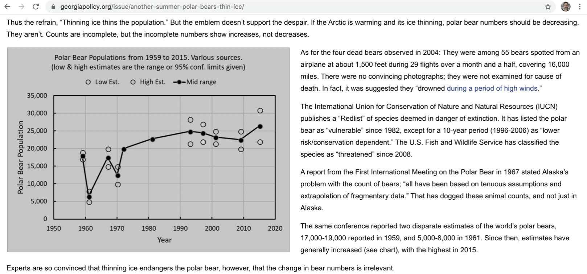
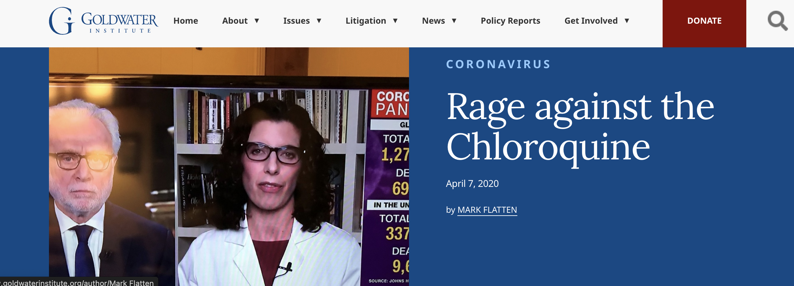
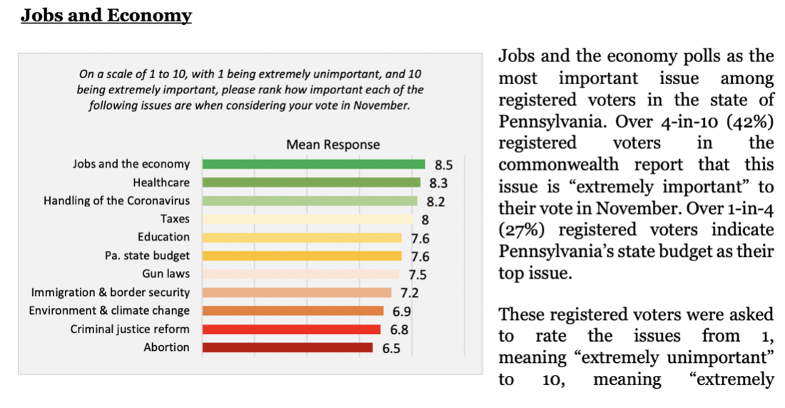
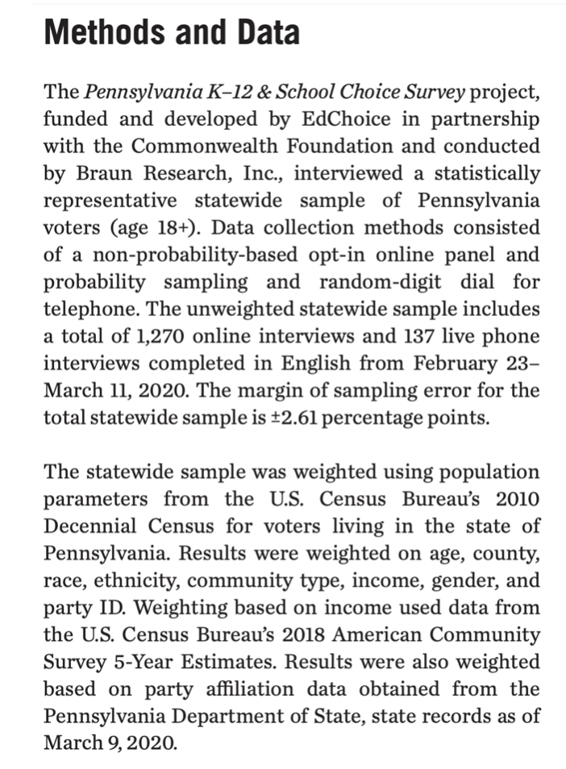
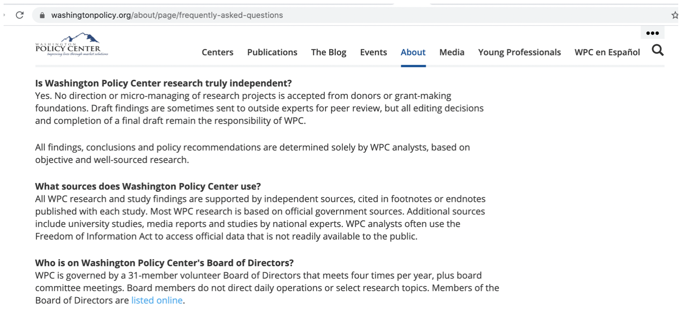

Images of Impairment
- Image 1:Georgia Public Policy Foundation. Problematic Graph and Evidence.
- Image 2:Commonwealth Foundation. Problematic Chart and Data.
- Image 3:Platte Institute. Problematic Graphs and References.
Impairment
">
Hannah Arendt from The Human Condition
This section examines how the SPN uses disinformation to impair users from critical thinking and it outlines how to recognize disinformation. Seeing examples of what networked disinformation looks like and how it does what it does is important for expanding one's critical and digital literacies. As Chefitz notes, a disinformation network's primary goal is to impair people from making a sound decision and to slow critical thinking while promoting narratives that compete with truth. The most common disinformation tactics for impairing audiences on SPN websites are as follows:
Designing Impairment
No References
The SPN does not provide references or links to locate sources it quotes or mentions in its publications.
Ambiguous Titles
The SPN titles its affiliates as foundations, institutes, or policy groups to appear authoritative.
503C NonProfit Status
The SPN uses nonprofit status to obfuscate its use of disinformation.
Citing Homegrown Research
The SPN creates and cites its own misleading research across its network.
Circulating Acontexual Data
The SPN circulates large data sets that have no context to confuse users.
Imitating Professionial Genres
The SPN adopts professional and academic genres to hide misleading information.
In this section, I examine the first three impairment strategies. The last three strategies have separate pages for analysis in this webtext. The SPN's 503(c) nonprofit status forms an initial layer, a first-layer, of manufactured credibility that helps the SPN hide bias. A nonprofit status signals to audiences that the information on SPN websites is credible because it's not for profit, but correlating a nonprofit organization with honesty and integrity is problematic. Nonprofit organizations have implemented a range of donation systems to collect large amounts of money to produce disinformation campaigns that laregly go unnoticed because they operate as alternative media. Moreover, labeling SPN affiliates as foundations, institutes, or policy groups creates another epistemological layer of disinformation that frames the SPN as honest. Terms that are associated with a culture and tradition of officiality and authority can disuade people from interrogating what these organizations actually do. When people believe information comes from a nonprofit foundation or a credible organization or foundation, they are more likley to relax their critical habits of mind. This is how disinformation works. A nonprofit foundation or institute can signal to audiences that the information they produce and share is not politically or financially motivated and does not promote extreme political and social bias. The presence and existence of an organization symbolizes authority. The longevity of the SPN affiliates makes disinformation possible. A network of websites that exist for long periods of time are more capable of successfully disseminating misleading content that can lead to disrupting inconvenient facts.
The SPN complicates its audiences' ability to verify sources in its publications. Obfuscating source material forces audiences to either trust the content or spend extra time and energy verifying it, which, in some circumstances, can take hours, days, or even weeks to complete. In other words, disingenuous verification is a designed waste of time. Bakowicz (2023) reiterates this point in his study, noting how controlling time is a primary goal of a disinformation network. Making audiences locate where data in a chart came from or who wrote a source is a disinformation tactic designed to extend the time it takes to draw conclusions. The first example of impairment comes from an article on the Georgia Public Policy Committee's (GPCC) website that references an unsourced graph to inaccurately correlate the presence and absence of polar bears with climate change. This article's presence on the SPN website echoes larger narratives for climate science denial. Harold Brown references several sources and provides quotes in the article, but he does not cite any links or sources for readers to verify. The graph states “Various Sources” at the top of the page but the article does not provide any information about those sources or identify any of the sources referenced in the article. It also fails to provide a bibliography or works cited page so users can easily locate and verify sources. Failing to provide an efficient way to locate sources is a common characteristic of disinformation because it implies there is an intent to deceive. Below is a screenshot and link to the graph and article:

Figure 1: GPPF Website. Problematic Evidence. 6-6-2020.
MacLean (2020) highlights the Koch Brothers investment in climate science denial. She argues that they have spent millions in climate denial disinformation. Maclean notes that "widespread and well-funded disinformation has proved essential to securing the desired outcomes" for the Koch brothers (p. 135). It is a common fact that the Koch brothers finance think tanks that create misleading information. The article mentions a report from the First International Meeting on the Polar Bear in 1967 in Alaska, but there is no way to verify this source, and the report is over 35 years old. Brown does not provide page numbers for the source references, so readers are unable to locate the quote in the report. Brown blends together confusing data and outdated research without providing links and references to slow down the audiences ability to verify claims. This article attempts to shift the narrative on global warming and disinform readers. Taking the time to provide source verification is a deliberate attempt to prevent disinformation.
Brown also references a research article on tropical atolls to inaccurately correlate an increase in island size with a lack of global warming. He uses the article to insist that if global warming were occurring, islands would be decreasing in size; however, the article Brown cited in his report accounts for other physical transformations occurring on the island as a result of global warming. The article that Brown relies on to make his argument concludes that the measurement for erosion on some parts of the island can “be offset by accretion on parts of the coastline” (Webb & Kench, 2010), and that accretion can give the illusion that erosion is minimal when, in fact, it is significant but less noticeable, considering the total size of the island. Brown's reference to a 43% increase in island formation is taken from the article's abstract on the first page. The article he cited found that "assessments of island change must be evaluated at the 'whole island' scale involving analysis of potential change in the entire island perimeter” (Webb & Kench, 2010) and not just at one part of the island. Coastal erosion is not representative of the island's total erosion. Using sea level data on a select set of locations to represent global sea level rising is misleading. Referencing 14 specific locations that have unique land formations that experience a variety of effects from global warming, locations that are very different from other land formations, and using those locations to represent global warming erosion is also misleading. Articles on global warming on SPN websites are part of a long term goal to opppose climate science that interferes with industry profits.
Checking the references in an opaque source will often result in locating nodes of disinformation. Teaching students how to critique source interjection is important for discovering how disinformation networks cite and reference sources that do not have a succinct connection to the argument. Audiences should be suspicious of references that fail to provide the title or the author of the source, the title of the publication outlet, or a reference or works cited page. Slowing down the ability to verify information requires very little effort to design and execute, especially online, but it is a sign of a disinformation network. In print publications, there are more opportunities to review and prevent content from publication if it is problematic or inaccurate. Democratic communication systems require efficient methods and practices for validating information in a timely manner.
Networking Disinformation
More examples of the SPN using disinformation to impair users.
The Goldwater Institute (GI), out of Arizona, writes and publishes hundreds of reports that promote SPN target issues and narratives. In "Rage against Chloroquine," Mark Flatten cites medical evidence from the NY Post and references several questionable websites to support his claims. He fails to cite medical scholarship or peer-reviewed research on hydroxychloroquine. Flatten's article asserts that the medical community lacks knowledge about hydroxychloroquine's ability to treat Covid; however, this is a debunked claim that gets repeated over and over on SPN websites.
All the sources referenced in Flatten's article are questionable and require verification. References from experts are woven into professional and academic genres that can reduce audiences' desire to verify them. Even though doctors have a long, historical understanding of hydroxychloroquine and its effects on humans, Flatten argues that hydroxychloroquine is the “most promising” drug for treating Covid without evidence to support that claim. This article's disinformation on hydroxychloroquine echoes existing narratives about the effectiveness of hydroxychloroquine to treat Covid that have circulated in the media since 2020, the height of Covid.

Goldwater Institute
Covid DisinformationIn "Busting Myths", the author asserts that all teachers carry guns outside of school and would carry a gun in a classroom to protect their students. However, there is no evidence to support this claim. The report also predicts that an overwhelming number of teachers would volunteer to carry a gun in the classroom, but it does not offer any evidence to support that claim, either. Research on arming teachers maintains that a majority of national and state school boards oppose arming teachers, and many national and state surveys that ask teachers if they would carry a gun on campus have definitively shown that teachers emphatically do not want to carry a gun on campus or in the classroom. A California State University professor conducted a study on arming teachers in schools and found that less than 15% of teachers even owned a gun, and that over 90% of teachers did not want to carry a gun at school. This is an example of how disinformation networks make up claims and repeat debunked claims and narratives to shift and disrupt reality. There are hundreds of documents and publications on SPN websites that repeat debunked information in this same way.
Independence Institute
Gun Control DisinformationThe Platte Institute (PI) uses a blueprint that contains questionable and obscure research references and citations to support its claims. Click on the image below and examine an example of vaugue references and ambiguous data visualizations inside the blueprint.
The list of references in the PI's report and the data in the pie charts are confusing. The report cites essays, blog posts, and podcasts but these citations are missing dates, author names, and publication outlets. There is a deliberate intent to make it difficult for users to verify information. The article also supports the same misleading narrative about climate change that the SPN perpetuates.
{kind=link}
Platte Institute
Visual DisinformationThe Buckeye Institute (BI) wrote a policy memo to encourage using telehealth because it benefits people who have low mobility and live far from medical care. However, the references in the memo that support these claims are disconnected. For example, the reference about people with “low-mobility” benefiting from telehealth specifically addresses homebound patients with depression who need psychotherapy (Buckeye Institute). The reference supporting the claim that people who “live far” away from medical care benefit from telehealth is from an article about specialized pediatric care in rural communities that fails to address the benefits of telehealth more broadly. The title of one of the articles referenced in the memo is “Six-Month Postintervention Depression and Disability Outcomes of In-Home Telehealth Problem-Solving Therapy for Depressed, Low-Income Homebound Older Adults,” and the other article is from a pediatric's journal. Telehealth for children with special needs who live in rural areas is not a typical patient population, nor does it represent the total population or reflect how children with special needs as a patient population would normally use telehealth services. Homebound depressed patients who need psychotherapy are also not a representation of general patient care. Having access to healthcare has been a problem for these specific patients before and after Covid, so using these sources to address telehealth in relation to the pandemic and this specific patient population is misleading. Misrepresenting source material is a disinformation tactic designed to impair one's critical thinking. The artificial connectivity between the references and the claims in a report with graphs and statistics manifests the illusion of credibility. This is an intentional action.
The Commonwealth Foundation, an SPN affiliate out of Pennsylvania, hired a marketing firm to conduct surveys on reopening the economy during Covid in 2020 to generate data that countered and competed with scientific research on Covid. 74% of respondents supported a move to reopen the state after the Covid shutdown. 40% of respondents somewhat agreed and 34% of respondents strongly agreed. Below is a link and screenshot of the graph.
Figure 2: Commonwealth Foundation (CWF). Website. 6-15-2020.
There are several questions left unanswered in this survey. The article claims that voters were polled, but there are no references or summaries of the demographics of the respondents for the survey or a note about where and when the poll was conducted. The article states that the firm administered the poll across the state, but it does not provide the name of any of the cities and counties where the polling took place. When users click on the link for the poll results, they are taken to the results of an unrelated poll on Pennsylvanians' top priorities. The CWF relies on the results of another unrelated poll to further suggest that residents approve of opening the state as soon as possible.
Audiences have to click on two different links on the CWF website to access the correct poll data. Below is an image and link to the poll questions and data:

Figure 3: CWF Problematic Poll Data. 6-15-2020.
Furthermore, the poll on jobs and the economy does not ask respondents if they want to reopen the economy during a pandemic. This poll also states that healthcare is a top priority for voters and that opening the economy too early during a pandemic would threaten the community's health. The CWF is trying to use data from two different, unrelated polls to support a claim that neither poll appears to support on its own. These two questionable polls look credible on the surface but cannot be verified. In the methodology section, there is a link to the poll results and survey report but the survey report only provides the percentages of survey responses, which further obfuscates how users can read the data. Instead of providing the total number of votes for each question, the article provides percentages so the responses appear to have a greater sense of value. The lack of transparency is a form of intentional impairment that makes the SPN a disinformation network.

Figure 4: CWF Research Methods.
The article claims the results of the interviews were weighed on demographics that are never actually provided. The CWF stated that it conducted interviews with over 1000 people, but the demographics of that population are not provided.
Pam Lewson, from the Washington Policy Center (WPC), proclaimed that her research found that "the application of Chlorpyrifos” as a pesticide in Washington “is extremely safe" and has been used in the state safely for years, but she fails to cite any research to support this claim.

Figure 6: Washington Policy Center (WPC) Website. Poor Evidence. 6-18-2020.
Lewson makes unsupported claims about the safety of Chlorpyrifos after research has proven that chlorpyrifos is a dangerous pesticide with direct links to cancer and other health concerns in humans. Disinformation networks continue to push back against research and facts that disprove certain claims. For example, in a Pediatrics article, several doctors found that children exposed to chlorpyrifos had lower brain development scores than children with less exposure (Raugh et al., 2006). Doctors also found that children exposed to higher levels of chlorpyrifos exhibited more developmental disorders. Lewson's article is a piece of disinformation that supports a larger narrative on deregulation and anti-corporate responsibility. Impairment is an extremely effective and foundational disinformation tactic. If misleading information can appear authentic and credible, users might trust the information, even if it promotes debunked claims and unverified arguments. Slowing down someone's verification process, or eliminating it all together, is an effective disinformation tactic that does not require significant effort to achieve. Ong et al. (2018) affirmed that many times “Trust overrides deceptive intent” (p. 59), and if users trust the SPN and its affiliates, they will trust its content.